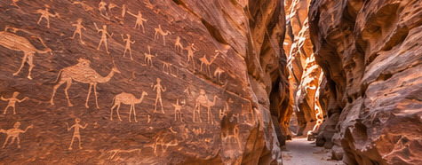
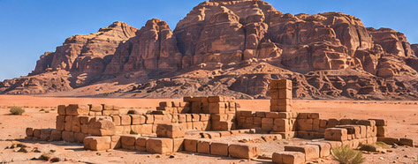
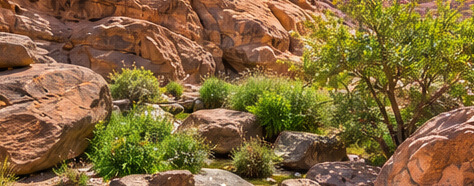
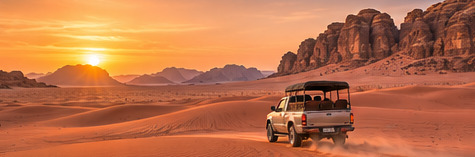
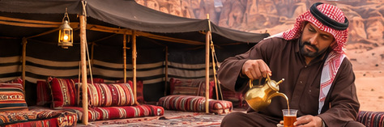
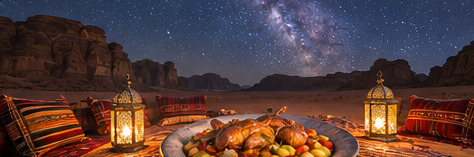

Wadi Rum: Jordan’s Desert of Red Sand
Red sands, ancient inscriptions, and nights under the stars.
Places to explore in Wadi Rum
-

Khazali Canyon
A narrow canyon whose walls carry ancient rock drawings of people and animals, along with old inscriptions.
-

The Nabataean Temple
The remains of a Nabataean temple to the goddess Allat at the foot of Jebel Rum, built in the late 1st century BC or early 1st century AD.
-

Lawrence’s Spring
A spring named after T. E. Lawrence, who passed through Wadi Rum during the Arab Revolt of 1916–1918. Look for Nabataean inscriptions on the rocks nearby.
Experiences to try in Wadi Rum
-

Sunset 4×4 Ride
A 4×4 ride across Wadi Rum’s red sands at sunset.
-

Stay at a Bedouin Camp
Spend the night in a traditional Bedouin camp.
-

Dinner Under the Stars
Enjoy a traditional zarb dinner under a clear desert sky.
Plan your visit
- Suggested visit
- One night: a sunset drive, a night at camp and an early-morning tour.
- Getting there
- About four hours’ drive south of Amman, or about an hour from Aqaba. Tours start from the visitor centre and Rum village.
- What to bring
- A warm layer for cold winter nights, sun protection and a torch.
The camp night, dinner and 4×4 ride are booked with a local Bedouin operator. Entry to the protected area is included in the Jordan Pass.
How many days do you need in Wadi Rum?
One night is enough for most visitors: a sunset 4×4 drive, a night at a Bedouin camp and an early-morning tour before you leave. Because Wadi Rum usually sits between Petra and Aqaba or the Dead Sea, a single night fits easily into a longer trip.
Stay a second night if you want more time to walk among the canyons and rock inscriptions, or simply to enjoy the quiet and the stars.
Getting to Wadi Rum
Wadi Rum is about four hours’ drive south of Amman, and about an hour (around 60 km) from Aqaba. From Petra it is about 120 km, so you can spend the morning in Petra and arrive in the desert in time for sunset.
Tours of the protected area start from the visitor centre and Rum village. From Wadi Rum, the drive north to the Dead Sea is about 330 km.
Best time to visit Wadi Rum
Spring and autumn are the best seasons: warm, clear days for the 4×4 ride and comfortable evenings at camp. Summer days are hot on the sand, so most activity happens in the early morning and from late afternoon into sunset.
Winter days are often pleasant, but desert nights are cold. Pack a warm layer for the evening at camp and the early-morning tour.
Tours that include Wadi Rum
These sample programs include a night in Wadi Rum. Each can be changed to suit your dates, pace and hotels.
Questions about visiting Wadi Rum
Is Wadi Rum suitable for children?
Yes. The 4×4 ride across the red sand, the camp and dinner under the stars are popular with children. Desert nights can be cold in winter, so pack warm layers for everyone.
What should I pack for a night in Wadi Rum?
A warm layer for cold winter nights, sun protection, a torch and comfortable shoes for sand and rock.
What is the best time of day in Wadi Rum?
Late afternoon into sunset, when the sand and the mountains turn deep red. Early morning is cool and calm, and after dark the clear sky is full of stars.